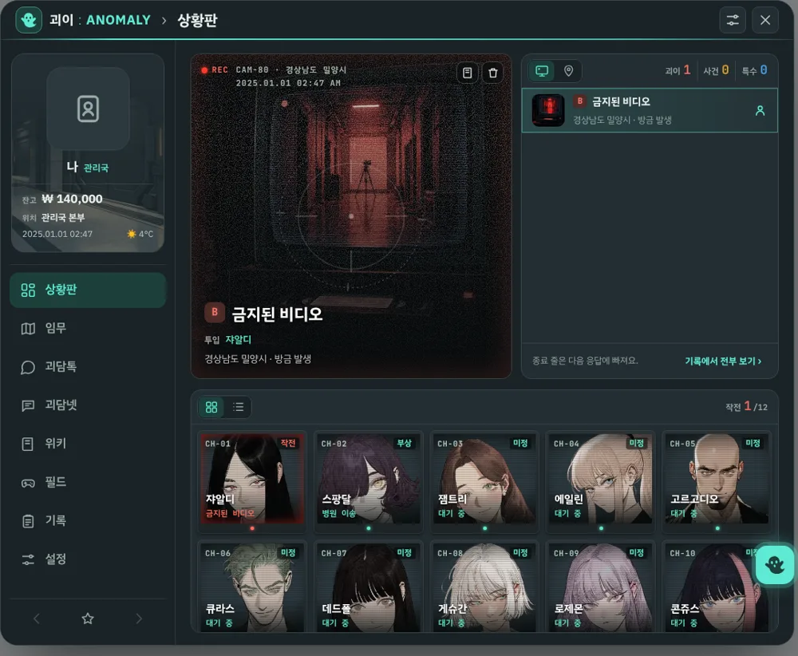
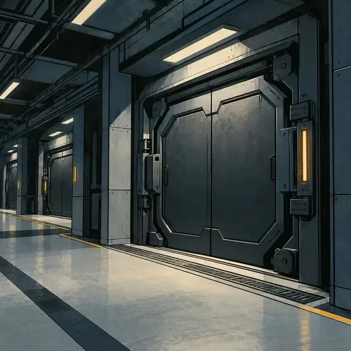
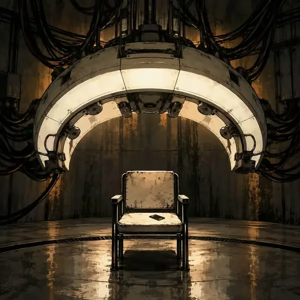
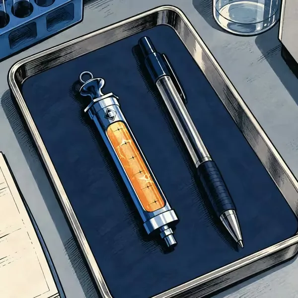
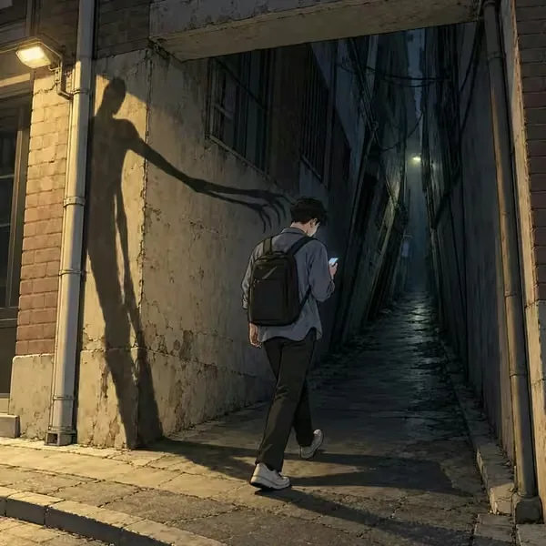
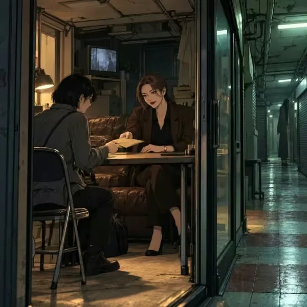
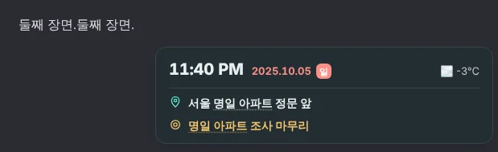
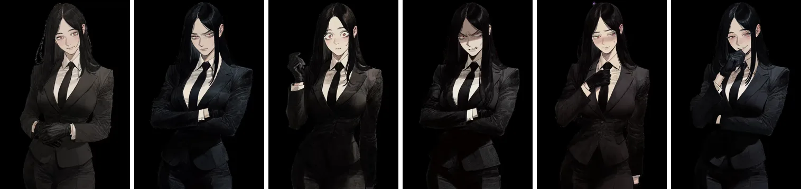
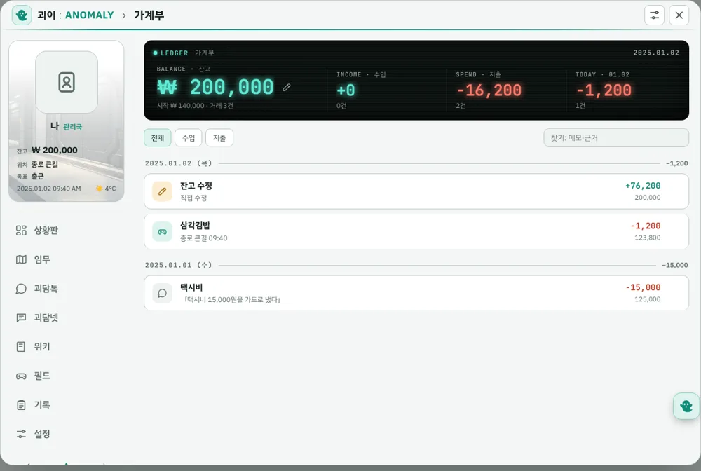
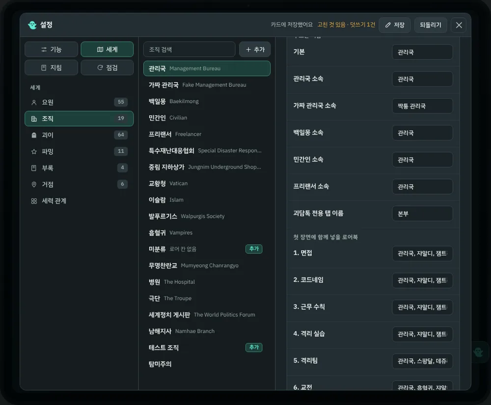

REC ● 00:00:13STANDBY
괴이ːANOMALY
출근길 지하철, 단골 편의점, 오래된 아파트.
당신이 아는 서울 뒤편에, 괴이가 산다.
현대 대한민국을 무대로 한 괴담 RP 봇.
채팅 옆에 상황판·메신저·커뮤니티·위키가 붙는 RisuAI 플러그인 + 카드.
RisuAI 플러그인
한국어 · English
자동 업데이트
무료

유령 버튼을 누르면 열리는 창. 이야기 밖에서도 세계는 돌아갑니다.
CHOOSE YOUR SIDE
어느 쪽에 설 것인가
소속에 따라 같은 괴이도 전혀 다른 이야기가 됩니다.

관리국
괴이로부터 인류를 지키는 비밀 조직. 코드네임 하나로 살아가는 소수 정예 초인 요원들.

가짜 관리국
스스로를 진짜라 믿는 또 하나의 관리국. 괴이를 「이물」이라 부르고 체계화된 무력으로 누른다.

백일몽 주식회사
괴이를 상품으로 만드는 제약 대기업. 겉은 제약사, 진짜 상품은 「꿈결」.

민간인
아무것도 모르는 평범한 사람. 지하철에서 마주친 여자 하나가 모든 걸 바꾼다.

프리랜서
협회와 뒷골목 알선소의 의뢰로 먹고사는 해결사. 돈이 되면 간다.
▸ 소속마다 준비된 첫 장면 + 직접 입력 + 목표와 동료를 고르는 커스텀 임무. 시작은 유령 버튼 한 번.
HOW IT PLAYS
이렇게 플레이합니다
STEP 1
현장을 고른다
상황판에 뜬 괴이 하나를 목표로 찍어요.
STEP 2
요원을 붙인다
같이 갈 요원을 골라 투입해요.
STEP 3
이야기가 시작된다
다음 장면이 그 현장에서 열려요.
STEP 4
보고서가 남는다
끝나면 알림과 함께 보고서 한 장.
MISSION
고르고, 붙이고, 출동
지도에서 현장을 고르고 같이 갈 요원을 정하면 다음 장면이 거기서 시작돼요.
CUSTOM
가고 싶은 곳으로 직접
장소와 목표, 동료를 골라 나만의 임무를 짤 수도 있어요.
REPORT
다녀온 사건은 보고서로 남는다
언제 들어가 언제 끝냈는지, 누구와 갔는지, 무슨 일이 있었는지. 이미지로 저장해 자랑하세요.
SYSTEMS
채팅창 하나에 도시 하나
괴담톡
요원이 먼저 톡을 보낸다
답이 늦으면 재촉하고, 단톡방에선 자기들끼리 떠들어요. 전화를 걸면 통화 장면으로 이어집니다.
괴담넷
내가 겪은 일이 게시판에 올라온다
익명들이 내 이야기로 글을 쓰고 댓글을 달아요. 나도 글을 올리고 쪽지를 보낼 수 있어요.
괴담위키
모르는 이름은 위키에서
본문에 나온 이름을 바로 찾아보고, 없는 문서는 그 자리에서 써 줘요.
인물 기록
한 말을 기억한다
「말 편하게 해」 한마디, 다친 곳, 지킨 약속이 다음 턴에도 남아요. 리롤하면 같이 되돌아가요.

상태창
채팅마다 작은 상태창이 붙어서 지금 몇 시, 어디, 누구와 있는지 잃지 않아요.

캐릭터 이미지
요원마다 표정 그림이 카드에 들어 있어서 장면에 맞는 얼굴이 본문 사이에 나와요.

가계부
쓴 돈, 받은 돈이 알아서 적혀요. 월급날은 기쁘고 장비값은 아픕니다.

세계 편집
새 괴이, 새 요원, 새 조직을 넣고 세력끼리 사이도 직접 정해요.
캐릭터로 플레이
내 페르소나 대신 요원을 골라 그 사람으로 이야기를 시작해요. 신분증도 그 요원으로 바뀌어요.
폰에서도 그대로
폰 화면에 맞춘 창, 아래 메뉴와 숨은 서랍, 즐겨찾기.
FIELD BETA
채팅에서 나와, 본부를 걸어 보세요
플러그인 안에 든 도트 게임. 요원에게 말을 걸면 진짜 대화가 되고, 거기서 있었던 일이 본편 이야기로 이어져요.
살아 있는 본부출근하고, 밥 먹고, 졸고, 수다 떠는 요원과 직원들.
흐르는 시간움직이고 대화하고 싸울 때만 시계가 가요. 밤엔 야간 경비가.
지하철로 서울종각에서 영등포 시장, 강남, 망원, 여의도 한강공원까지.
대련대전 액션식 전투 AI와 1:1, 1:2.
MODELS
보조 모델 없어도 다 됩니다
기능마다 메인·보조 모델을 고르고, 안 쓰는 기능은 꺼 두면 돼요. 상황판·상태창·가계부·보고서는 모델을 따로 부르지 않아요.
알아 둘 것 — 카드가 그림 때문에 커요. 창 안 화면 글자는 한국어만 있어요. 본부 필드는 베타예요.
START
3분이면 출근
1
zip 받기 — 아래 「받으러 가기」에서 최신 zip.
2
플러그인 넣기 — Risu 설정 → 플러그인 → 가져오기에서 goei-plugin.js, 확인 창은 허용.
3
카드 가져오기 — zip 안의 괴이_ANOMALY.charx 를 캐릭터로 가져오고, 채팅 구석의 👻 를 눌러 소속·장면·언어를 고르면 끝.
받으러 가기 →업데이트는 플러그인 탭과 창 안 「점검 → 업데이트」에서. 채팅은 그대로 남아요.
FAQ
궁금한 것
다른 봇을 쓸 때도 무거워지나요?
아니요. 플러그인 파일은 「괴이 카드인지」만 확인하는 작은 시작기예요. 기능 전체는 괴이 카드를 열 때만 꺼내 씁니다.
보조 모델이 꼭 있어야 하나요?
아니요. 본편 모델 하나로 모든 기능이 됩니다. 원하면 기능마다 보조 모델로 돌릴 수 있고, 안 쓰는 기능은 꺼 두면 돼요.
모바일에서도 되나요?
됩니다. 창이 폰 화면에 맞춰 바뀌고, 본부 필드도 터치 스틱과 버튼으로 움직여요.
영어로 플레이할 수 있나요?
시작할 때 English 를 고르면 첫 장면이 영어로 나와요. 창 안 화면은 한국어입니다.
설정이 너무 많아 보여요
기본값 그대로 시작해도 충분해요. 세력·장면·언어 세 가지만 고르면 됩니다.
— END OF TRANSMISSION —
오늘 퇴근길, 평소와 다른 골목으로 가 보시겠어요?
괴이ːANOMALY